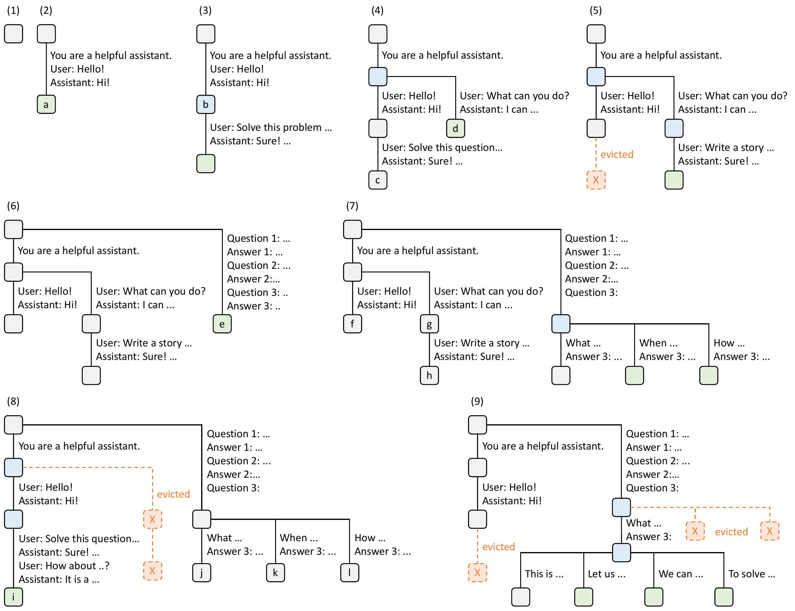
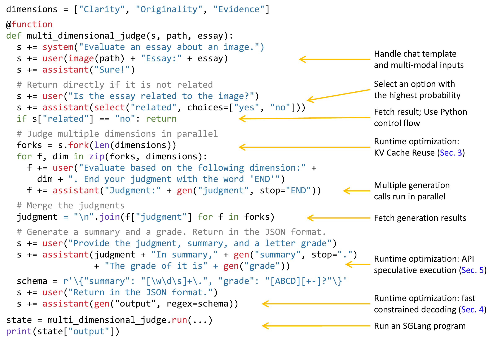
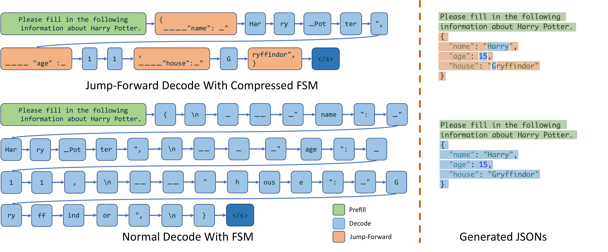
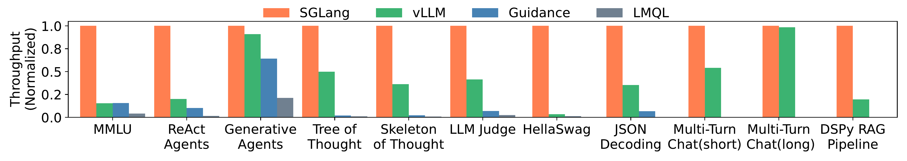
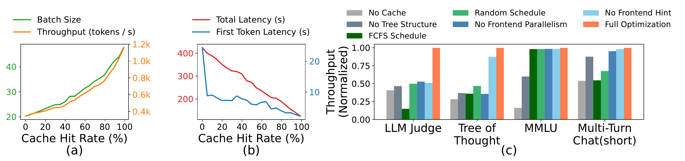

SGLang: Efficient Execution of Structured Language Model Programs
複雜的語言模型程式（Language Model Program, LM program）會反覆延伸同一段 prompt、分叉多個 generation，還會要求 JSON 等固定格式；若 serving engine 只看到彼此獨立的 requests，就會重做 prefix prefill、串行化可平行分支，並對 grammar 已決定的 token 仍逐步 decode。SGLang 以 Python-embedded frontend 暴露這些結構，再由 RadixAttention、compressed finite-state machine（FSM）與 API speculative execution 分別消除三類浪費。
實驗事實在論文的 Llama-2-7B、FP16、單張 NVIDIA A10G 24GB、離線最大 programs/s 評估中，作者報告最高 6.4× throughput、最高 3.7× latency reduction；這兩個數字都是 11 類 workload 與 2023 年版 baselines 中的最佳案例，Figure 5–6 沒有標出是哪一組 workload–baseline，也不是平均或現代通用 serving 保證。 §6.1–6.2 · PDF pp.7–8 · Figures 5–6
文章目錄
為什麼 LM program 會產生可重用的工作？
理解 SGLang 不需要先學一套新語言；真正的門檻，是看見「一次應用」已不等於「一次模型呼叫」。Agent、tree search、few-shot evaluation、RAG 與 multi-turn chat 都會讓多次 generation 共享歷史、彼此依賴或分叉，而這些關係正是 serving runtime 原本看不見的最佳化訊號。
後文只需要四個概念
| 概念 | 最小直覺 | 後文用在哪裡 |
|---|---|---|
| Prefill／decode | prefill 平行處理輸入 tokens；decode 自回歸產生後續 tokens。長 prefix 重做 prefill 很昂貴，長 output 則會讓 decode 主導總時間。 | 解釋 RadixAttention 省下什麼，以及為何 short-output chat 加速、long-output chat 幾乎不加速。 |
| Key–Value cache（KV cache） | Attention 為既有 tokens 保存 key/value tensors；同一模型下，相同 token prefix 會得到可重用的 KV。 | radix-tree edges 指向 KV pages，讓多次 calls 與不同 program instances 共用 prefix。 |
| Prompt stream 與 dependency | 一個 LM program 是 prompt state 加上 gen、select、Python control flow、fork／join；只有真的讀取某個結果時，後續才必須等待它。 | frontend 以非同步 streams 暴露可平行 branches，又不違反資料相依。 |
| 有限狀態機（Finite-State Machine, FSM） | regex 可轉成狀態與合法轉移；若目前狀態只有唯一後續字串，就沒有選擇需要模型逐 token 判斷。 | compressed FSM 把連續唯一轉移合併，觸發 jump-forward。 |
一個共用 prefix 的最小例子
P = system_prompt + five_shot_examples
request_1 = P + question_1
request_2 = P + question_2
request_3 = P + question_2 + draft_answer + critique若三個 requests 分開送入普通 API，P 至少被 prefill 三次；第三個 request 又包含第二個 request 的更長 prefix。只要 runtime 能把 token sequence 當 key，便可計算一次 KV(P)，再從分叉點各自延伸。論文 Appendix A 的 few-shot、self-consistency、multi-turn chat 與 tree-of-thought 圖例都具有這種結構。 Appendix A.1 · PDF p.15 · Figure 9
分析這個例子把「程式相依」與「token prefix」刻意分開：前者決定何時可並行，後者決定哪些 KV 可 exact reuse。兩者常同時出現，但不是同一件事；SGLang 的 frontend 與 runtime 分別處理它們。
下一個問題因此不是「KV cache 有沒有存在」，而是：為什麼既有 API 與 inference engine 即使都有 KV cache，仍反覆做相同工作？
逐一執行 LLM 呼叫，浪費究竟從哪裡來？
讀者最容易把問題誤解成「寫 prompt 不方便」。論文真正瞄準的是一個跨層資訊斷點：program 知道哪些 calls 共享 history、哪些 branches 可並行、哪些字元被格式強制；通用 serving API 卻只收到一串互不相關的 requests。
三種症狀，共同根因是 runtime 缺少 workload structure
第一種是重複 prefill。 Few-shot examples、agent history、tree search path 與 chat history會跨呼叫重複。一般 request 完成後只釋放其 KV，或只能重用單一、預先指定的 prefix；它無法把多層且動態出現的共享片段當作一個可驅逐 cache。 §1 · PDF pp.1–2
第二種是失去程式內平行。 用 OpenAI-like API 寫 Figure 2 的 multi-dimensional judge，需要手工拼字串、等待 calls、管理多 branches 與 parse structured result；作者量得等價版本需要 2.1× 程式碼行數。更重要的是，若每個 call 在 Python 層同步，可同時生成的 dimensions 就被序列化。 §2 · PDF p.3 · Figure 2
第三種是確定輸出仍逐 token 推論。 一般 regex constrained decoding 每一步用 FSM mask 掉非法 tokens，但像 JSON 的標點與欄位名常只有一條合法路徑；即使下一個 token 已被 grammar 唯一決定，engine 仍做一次模型 forward。 §4 · PDF p.6
最近方法為何仍不夠
| 路線 | 已解決 | 對本文 workload 的缺口 |
|---|---|---|
| OpenAI-like Completion API | 介面通用、可連接黑箱服務。 | 每個 call 重傳累積 context；program 必須手工管理字串、parallelism 與 parsing。 |
| Guidance／LMQL 等 LM programming systems | 提供 generation control 與 structured primitives。 | 作者認為 runtime 沒有同時處理 multi-level prefix reuse、tree-aware eviction／scheduling 與本篇 jump-forward。 |
| vLLM／TGI／TensorRT-LLM 等通用 engines | batching、memory management、optimized kernels。 | API 將 workload 結構藏在獨立 requests 之後；本文實驗只直接比較 vLLM 0.2.5，沒有評估 TGI／TensorRT-LLM。 |
| vLLM／ChunkedAttention 的 prefix sharing | 可共享一層或已知 prefix KV。 | 本文主張不能自動表示任意、多層 tree sharing 並配合 LRU eviction。 §7 · PDF pp.9–10 |
| 一般 regex FSM decoder | 保證輸出符合 grammar。 | 仍每 token forward，不辨認連續唯一轉移。 |
由失敗模式推導五項成功條件
- R1 · 可泛化的 prefix reuse：任意 token sequence 都可查詢、插入、split 與 eviction，不要求使用者預先宣告固定模組。
- R2 · 記憶體安全：cache 與 active requests 共用有限 GPU memory，eviction 不得刪除 in-flight KV。
- R3 · locality-aware execution：排程真的把「可重用」轉成較少 prefill，而不只把 KV 留在記憶體。
- R4 · 保留 program semantics：independent generations 可並行，真正的 Python result dependency 仍是同步點。
- R5 · structured path 少做 rounds：對 deterministic grammar path 一次前進多 tokens；黑箱 API 則盡量少重傳 context。
分析本文沒有以 R1–R5 編號；這裡依 §1–§5 的症狀、機制與 correctness 約束重組。它們讓後文每個 component 都能回答一個具體問題，而不是把 RadixAttention、FSM 與 DSL 當成互不相干的功能清單。
要同時滿足 R1–R3，關鍵不是再加一張 hash table，而是先換一個 cache 的心智模型。
把 prompt history 當成一棵樹，為何就能少算？
SGLang 的核心洞見可用「共用路段的導航圖」理解：完整 request 不是一塊不可分割的字串，而是一條從 root 沿 tokens 前進的路徑；兩個 requests 在分叉前走過同一路段，就只需鋪設一次 KV。Radix tree 讓這張圖同時成為索引、cache 與排程提示。
三條 request 路徑如何變成 cache
假設 \(r_1=[A,B,C]\)、\(r_2=[A,B,D]\)、\(r_3=[A,B,D,E]\)。root 到 \([A,B]\) 是共同 edge；\(C\) 與 \([D,E]\) 是兩個 branches。當 \(r_2\) 已完成，\(r_3\) 只需命中 \([A,B,D]\) 並計算 \(E\)；若記憶體不足，leaf \(C\) 可先被 LRU eviction，而共同 ancestor \([A,B]\) 仍被其他 branch 使用。
Figure 3 把同一操作展開成九個時間點：新 prompt 匹配／split tree、建立新 leaf、request 完成後 cache 保留，以及容量不足時 leaf-first eviction。橘色節點的 reference count 保護 active request，避免 R2 的 in-flight KV 被刪除。 §3.2 · PDF p.5 · Figure 3
{kind=link}

把直覺寫成 hit-rate 下界
R 是離線已知的一批 request token sequences，|r| 是完全重算時的 prefill token 數，C 是實際新計算的 KV token 數，T 是它們組成的 radix tree，|e| 是 edge 上 token 數。任何執行順序至少計算每條 edge 一次；因此 \(\sum |e|\) 是計算下界。 Appendix A.3 · PDF p.16 · Theorem 3.1
若 cache 至少容納最長 request，depth-first search（DFS）會在離開一個 subtree 前處理完其 descendants，使每條 edge 恰好算一次；longest-shared-prefix-first 是 runtime 對此順序的近似。這把 R3 具體化：保留 KV 不等於命中，排程必須趁 prefix 還熱時延伸它。
同一洞見也適用於 grammar：辨認「沒有分叉的路」
對 regex FSM，可把每個合法輸出想成另一棵路徑圖。若目前狀態往後只有固定字串 {"grade":"，模型在這段沒有決策要做；真正需要 sampling 的是 A/B/C/D 等分叉。Compressed FSM 便把無分叉的連續 edges 壓成一條，跳到下一個 choice point。這個 intuition 直接導向 method 的兩條 runtime path：prefix tree 少做已經算過的工作，compressed FSM 少做根本不必決策的工作。
有了兩張「路徑圖」，接下來只剩一個系統問題：Python 程式如何把它們送進 runtime，runtime 又如何安全地執行與回收狀態？
SGLang 如何讓前端結構一路影響 serving runtime？
本章要跨過的理解障礙，是不要把 SGLang 看成「DSL 加上一個快取」。它是一條由 program semantics 驅動的執行鏈：frontend 決定何時提交、分叉與等待，SGLang Runtime（SRT）再依 token prefix、memory state 與 grammar state 做 cache、batching、scheduling 與 decode。
先走一次完整流程
- Program 建立 prompt state。Python 函式以
+=／extend加文字，用gen、select宣告 generation，並可加入 image／video。 - Interpreter 建立非同步 prompt stream。primitive submission 不阻塞；背景 stream executor 依序送工作。只有 Python 真的讀取
s["variable"]時才等待，因而滿足 R4。 fork暴露 branches。共同 prefix 會先送往 server，children 再各自延伸；這既擴大 batch，也避免並發 children 在 radix tree 中以錯誤順序插入。- SRT 做 longest-prefix match。命中的 token path 直接指向既有 KV pages，只對 unmatched suffix 做 prefill，滿足 R1。
- Scheduler 在有限 memory 中組 batch。cache 與 active requests 共用 pool；不足時先 evict reference count 為 0 的 LRU leaf，並優先排 matched prefix 長的 waiting request，滿足 R2–R3。
- Decoder 選擇一般或 jump-forward path。自由生成逐 token decode；regex FSM 的唯一轉移串可一次跨過，再 retokenize 對齊。
- 結果回到 stream，KV 留作後續重用。program 在 dependency 處取得值；已完成 request 的 KV 繼續留在 radix tree，直到被 eviction。
Figure 2 將同一條鏈縮成一頁：左側程式同時含 multi-modal input、early return、fork/join 與 regex output；右側逐一對應 frontend parallelism、KV reuse、compressed FSM 與 API speculation。 §2 · PDF p.3 · Figure 2
{kind=link}

Frontend：用「提交非同步、取值才等待」保留 Python 動態性
gen(name, stop, regex) 將生成結果綁到名稱；select 從 choices 中選最高機率項；fork(n) 複製 prompt state，join 回收 branches。Interpreter 不要求先建完整 graph，所以可執行資料相依的 Python control flow；代價是跨整個 program 的靜態 rewrite 空間較小。Table 1 顯示 SGLang 以 Python 語法涵蓋 video、fork/join、自有 runtime 與 OpenAI backend。 §2.1–2.3 · PDF pp.3–4 · Table 1
分析這個 blocking-on-fetch 規則很像 future/promise：它讓 branches 在 server 端重疊，卻不假設任意兩個 Python statements 都可重排。Frontend 因而不是 performance 的裝飾，而是把 R4 所需的 dependency signal 送入 runtime。
RadixAttention：索引、記憶體與排程必須共同運作
CPU 上的 radix tree 把 token edges 映射到 GPU 上 non-contiguous KV tensors；每個 page 在本文實作中只含一個 token。Lookup 回傳 longest match；insert 可在 partial match 處 split node；completion 只降低 reference count，不立即刪除。Memory pool 被新 batch 壓縮時，evictor 從 least-recently-used leaf 開始，直到足夠空間。 §3.2 · PDF pp.4–6 · Figure 3
Tensor parallelism 下每張 GPU 維護相同 token tree、各自保存 sharded KV，不需新增同步。Data parallelism 則讓 worker 各有 subtree，router 保存弱一致 meta-tree並做 prefix-affinity dispatch；作者以四 workers／MMLU 文字報告 linear scaling 與 optimal hit rate，但沒有附圖或數值。 Appendix A.4 · PDF p.17
Compressed FSM：只跳過 grammar 已唯一決定的 tokens
作者把「source state 只有一個 successor，且只允許一個 character/string」定義為 singular edge；連續 singular edges 合成 compressed edge。Decoder 抵達該 edge 時，先 append 固定字串，再將既有文字與新字串一起用原 tokenizer 重分詞，最後以一次 multi-token forward 更新 KV。 Appendix B · PDF pp.18–19 · Figure 10
這是依執行流程整理的成本記號，不是作者編號公式。一般 FSM 對 \(k\) 個強制 tokens 做 \(k\) 次 decode；jump-forward 理想上以一次 forward 處理，少約 \(k-1\) rounds。實際收益仍要扣 FSM preprocessing、retokenization 與不同 kernel shape 的成本。
Figure 11 左半以 forward-pass 序列比較 normal FSM 與 jump-forward；右半把生成 JSON 分成 model 自由生成與 FSM 強制加入的片段。 Appendix B · PDF p.19 · Figure 11
{kind=link}

黑箱 API：先多生成，再用下一段模板驗證
若無法修改 provider runtime，SGLang 讓前一個 generation 暫時越過 stop，多保留一段 suffix。後續 constant／primitive 到達時，interpreter 比對 suffix；吻合便直接消費，未命中則回退正常 API call。以 \(m\) 次 calls、每次累積 prompt \(P_i\) 表示，baseline input-token cost 為 \(\sum_{i=1}^{m}|P_i|\)；全部命中時接近只付 \(|P_1|\) 加少量 speculative output，miss 則多出 fallback。這是說明成本的分析式，不是作者公式。 §5 · PDF pp.6–7
作者主張精心設計 prompt 可讓模型按預期模板續寫並取得高 speculation accuracy；論文只在 GPT-3.5 三欄位 extraction 檢查 input-token cost，未給一般命中率或 latency 分布。
Compiler 是另一條受限路徑，不是正文結果的必要前提
預設 interpreter 之外，Appendix D 可用 abstract arguments trace SGLang program 成 dataflow IR，節點包括 ConstantText、Argument、Gen、Select、Variable 與 Fork；graph executor 可 scheduling、memory planning 與 code movement。Model-output-dependent control flow 在 trace 時未知，因此目前不支援。 Appendix D.1 · PDF pp.19–20
作者也用 GPT-4 把常數片段提前，目標是拉長可共享 prefix；20 個 templates 中以 5 個作 demonstrations、15 個測試，人工判斷 12/15 語義正確，平均增加 60 個 shareable-prefix tokens。失敗案例會把 constants 全部前移而改變 program meaning。 Appendix D.2 · PDF pp.20–21 · Figure 14
方法的因果鏈已完整：structure → signal → cache／schedule／jump → 少算。但「少算」是否真的成為端到端速度，必須逐一看 workload、baseline 與量測邊界。
哪些 workload 真的得到加速，6.4× 又代表什麼？
這一章的障礙不是數字太少，而是比較邊界容易被 headline 隱藏。論文把 programming system、runtime、backend 與 workload-specific reuse 一起比較；因此每個結論都必須連回硬體、baseline 版本、batching 定義與真正觸發的機制。
先固定共同實驗邊界
| 面向 | 論文設定 | 判讀影響 |
|---|---|---|
| Implementation | PyTorch；自訂 CUDA kernels 來自 FlashInfer 與 Triton。 | 結果包含 engine、kernels、frontend 與 API overhead 的綜合差異。 |
| Models／precision | Llama-2 dense、Mixtral MoE、LLaVA image/video、GPT-3.5 API；open-weight 7B–70B，FP16。 | 沒有量化 INT8／FP8、其他架構或不同 tokenizer 對 FSM 的影響。 |
| 主要硬體 | AWS EC2 G5，NVIDIA A10G 24GB；7B 用單 GPU。Mixtral-8x7B 用 8×A10G tensor parallel；Llama-70B 用 4×A100 80GB；multimodal 另用單 A10G／A100。 | 不同模型結果不是同一 GPU configuration；不能把柱高直接跨圖比較。 |
| Baselines | Guidance 0.1.8 + llama.cpp；vLLM 0.2.5 default API server；LMQL 0.7.3 + Hugging Face Transformers。 | 比較含語言／backend 差異；部分 workloads 因太慢或缺功能而缺 Guidance／LMQL。 |
| Throughput | 以「sufficiently large」program-instance batch 求最大 programs per second。 | 是離線 saturation throughput，不是 arrival-rate/SLO goodput；確切 batch size 論文未提供。 |
| Latency | 一次只跑一個 program、不 batching，對多個 instances 報 average。 | 不是 production concurrency 下的 TTFT／TPOT／p95／p99。 |
| 可重現資訊 | 每根 benchmark bar 需數分鐘至一小時；作者稱結果 deterministic。 | request 數、重複次數、warmup、SGLang commit、PyTorch／CUDA／driver 版本與 error bars：論文未提供。 |
§6.1 · PDF p.7 Appendix C · PDF p.19
Claim–test 1：co-design 是否改善 11 類 LM programs 的端到端效能？
Claim。作者主張SGLang 藉 prefix reuse、program 內平行與 faster constrained decoding，對多種 LM workloads 提升 throughput／降低 latency。
Test。在單張 A10G 24GB 上跑 Llama-2-7B／FP16；比較 MMLU、ReAct agents、generative agents、Tree-of-Thought、Skeleton-of-Thought、LLM judge、HellaSwag、JSON decoding、四輪 short/long multi-turn chat 與 DSPy RAG。Figure 5 求最大 programs/s；Figure 6 單 program、無 batching，報 average latency。各 workload 對 SGLang 正規化。 §6.1–6.2 · PDF pp.7–8 · Figures 5–6
Observation。實驗事實作者報告最高 6.4× throughput 與最高 3.7× latency reduction；Figure 5–6 僅呈現 normalized bars，沒有絕對 programs/s／seconds，也未在圖或正文指明這兩個最大值各是哪一個 workload–baseline pair。
Supported conclusion。至少在這組 7B、單 A10G、離線 suite 與所選 baselines 中，SGLang 的最佳案例具有大型端到端收益。Caveat。6.4× 不是 11 類 workload 平均、不是 production online goodput，也不能外推成相對當前 vLLM 的速度；作者刻意使用 vLLM 0.2.5，因當時最新版已把 RadixAttention 部分整合成 experimental option。 §6.1–6.2 · PDF p.7 · footnote 3
{kind=link}

何種結構對應何種收益
| Workload | 被利用的結構 | 預期瓶頸移動 |
|---|---|---|
| MMLU／HellaSwag | 5-shot prefix；HellaSwag 再共享 question prefix，形成兩層 reuse。 | 省 prefill 與 KV memory，後者可容納較大 saturation batch。 |
| ReAct／generative agents | agent template 與 previous calls。 | 每一步延伸 history 時少重算。 |
| Tree-of-Thought／Skeleton-of-Thought／LLM judge | forked generations、search history；frontend parallelism + cache。 | 同 program branches 一起 batch，並重用分叉前 KV。 |
| JSON decoding | regex 的 deterministic FSM paths。 | 少 decode rounds，而非只省 prefill。 |
| Multi-turn chat | 同 session chat history。 | short output 的 prefix 比例高，收益明顯；long output decode 主導、不同 sessions 又少 sharing，幾乎無 speedup。 |
| DSPy RAG | 共同 context example。 | 跨 program instances reuse prefix。 |
分析這張對照表比單一 6.4× 更能界定適用性：收益大小取決於 shareable prefill、branch parallelism 或 forced FSM path 占總時間的比例；沒有這三者的長 decode workload，不應期待同量級加速。
Claim–test 2：RadixAttention 的收益真的是 cache hit、tree policy 與 frontend signal 造成嗎？
Test A。在 Tree-of-Thought 中部分停用 matched tokens，掃 cache hit rate，再量 batch size、throughput、first-token latency 與 total latency。Observation。實驗事實Figure 8(a)(b) 顯示 hit rate 上升時 batch 與 throughput 上升，兩種 latency 下降；這直接連起「少 KV memory／少 prefill」與端到端結果。 §6.3 · PDF p.9 · Figure 8(a)(b)
Test B。在 LLM judge、Tree-of-Thought、MMLU、short chat 依序比較 No Cache、No Tree Structure、FCFS、Random、No Frontend Parallelism、No Frontend Hint、Full。Observation。Figure 8(c) 的完整設計在代表 workloads 最佳；不同 workload 對 tree、schedule、parallelism 與 hint 的敏感度不同。Caveat。圖為 normalized throughput，作者沒有提供每個元件的獨立絕對成本，且這些 variants 不是完整 factorial combinations。
{kind=link}

Fairness／overhead checks。11 workloads 的 hit rate 為 50%–99%，cache-aware scheduling 平均達 offline optimal hit rate 的 96%；但來源 Figure 13 只比較 hit rate，不比較公平。無 reuse 的 ShareGPT 100 requests 共 74.3 s，其中 radix-tree management 0.2 s、低於 0.3%，支持 default-on overhead 很小。 §6.2 · PDF p.8；Appendix C · PDF p.20 · Figure 13 §6.3 · PDF p.9
Claim–test 3：compressed FSM 與 API speculation 是否各自打中目標成本？
FSM test。JSON decoding 比較一般與 compressed FSM，並檢查 preprocessing 是否跨 batch reuse。實驗事實jump-forward 提升 throughput 1.6×；若每 request 重新 preprocess FSM，throughput 反而低 2.4×。Supported conclusion。強制路徑一次跨多 tokens 能省 rounds，但 setup cost 必須攤銷。Caveat。論文沒有報 JSON schema 複雜度、forced-path 長度分布、absolute throughput 或 output-probability fidelity。 §6.3 · PDF p.9
API test。用 GPT-3.5 從 Wikipedia page 擷取三個欄位，few-shot prompt 讓第一次呼叫嘗試續寫後續模板。實驗事實input-token cost 約降低 3×，作者稱 accuracy「high」。Caveat。accuracy 數值、baseline token 數、API model snapshot、重複次數、miss rate、輸出費用與 latency：論文未提供；因此只能支持這個 extraction case 的 cost 方向，不能支持一般黑箱 API 加速。 §6.2 · PDF p.9
Claim–test 4：更大模型、multimodal 與 production 是否維持相同趨勢？
Larger models。Mixtral-8x7B／8×A10G 與 Llama-70B／4×A100 80GB tensor parallel 的 normalized throughput 趨勢與 7B 類似；Guidance／LMQL 因沒有高效 tensor-parallel implementations 而省略。這支持機制可在受測 TP 配置運作，不是不同規模間的公平 speedup 對照。 §6.2 · PDF p.8 · Figure 7；Appendix C · PDF p.20 · Figure 12
Multimodal。同一 image 的多個 questions 可用 image hash 當 radix key 並 reuse image-token KV；baseline 改為各模型作者的 Hugging Face implementation，因其他 systems 不支援。 §6.2 · PDF pp.8–9 · Table 2
| 模型／資料 | 作者原實作 | SGLang | 表內比值 | 限制 |
|---|---|---|---|---|
| LLaVA-v1.5-7B／llava-bench-in-the-wild／單 A10G | 0.18 image/s | 1.15 image/s | 6.39× | 多 questions 共享 image；不同於 vLLM baseline。 |
| LLaVA-NeXT-34B／ActivityNet／單 A100 80GB | 0.02 frame/s | 0.10 frame/s | 5.0× | 不同模型、GPU 與工作單位，不可和上一列直接比絕對值。 |
分析正文把第一列概括為「up to 6×」，表內四捨五入前比值是 1.15/0.18≈6.39；它不是 headline 6.4× 的可確認來源，因 headline 明確來自跨 open-weight LM-program systems 的 Figures 5–6，且本文沒有作此對應。
Production case。實驗事實Chatbot Arena 以每模型單 worker 部署一個月後，LLaVA-NeXT-34B cache hit 52.4%、Vicuna-33B 74.1%；Vicuna-33B average first-token latency 改善 1.7×。作者將 hits 歸因於 common system messages、重複 example images 與 multi-turn histories。Caveat。因流量低而每模型只有一 worker；arrival rate、樣本數、latency 絕對值／分位數與對照時段未提供。 §6.2 · PDF p.8
Claim–test 5：compiler 能自動拉長共享 prefix，又不改變語義嗎？
Test。作者以 5 個 prompt templates 作 GPT-4 demonstrations，對 15 個未見 templates 重排 constants，再人工檢查 semantics。實驗事實12/15 被判定正確，平均增加 60 個 shareable-prefix tokens。Supported conclusion。LLM-assisted code movement 能在小型樣本中發現部分 reuse。Caveat。成功率只有 80%，人工判定 protocol、reviewers、下游 performance 與錯誤嚴重度未量化；失敗可直接改變 prompt meaning。 Appendix D.2 · PDF pp.20–21 · Figure 14
這些 claim–test pairs 支持的是一個條件式結論：當 program structure 真的對應大量 prefix、parallel branches 或 deterministic grammar path，co-design 能把它轉成少算；下一章要界定哪些推論仍超出證據。
證據支持到哪裡，哪些部署風險仍未回答？
本篇最值得保留的判斷，不是「SGLang 比所有 engines 快」，而是「program structure 應成為 runtime 的一等訊號」。要把這個設計原則與論文的特定 benchmark 排名分開，必須逐一檢查 exactness、公平、規模與 workload scope。
最強之處：問題、訊號與機制能一一對齊
分析RadixAttention 不只提出一個 prefix lookup data structure，而是把 cache indexing、active-request protection、LRU eviction、cache-aware scheduling 與 frontend fork hint 串在一起；Figure 8 又分別移除這些訊號，提供了比單純 end-to-end speedup 更接近因果的證據。Compressed FSM 也精確瞄準「合法但不必決策」的 rounds，而非泛稱 structured decoding 比較快。
另一個優點是同時保留兩條 adoption path：自有 SRT 能取得最大跨層最佳化，黑箱 API 仍可用 speculative continuation 減少 context cost。Interpreter 為預設、compiler 為受限選項，也誠實反映 Python expressiveness 與全程 graph optimization 的張力。
四種最佳化，不是四種相同的 correctness 保證
| 機制 | 能合理支持的保證 | 未解風險 |
|---|---|---|
| RadixAttention | 相同 token prefix 的 KV exact reuse；active reference count 避免 in-flight eviction。 | 未知 output length 可讓已驅逐 KV 重算；one-token pages 與 CPU tree 在極大 cache／cluster 的 metadata、locking、NUMA 成本未測。 |
| Longest-prefix scheduling | offline、cache ≥ longest request 時達最高 hit-rate；實測平均接近 96% optimal。 | 作者明示：greedy policy 可能 starvation；定理不保證 online fairness 或 tail latency。 §3.3 · PDF p.6 |
| Compressed FSM | 輸出仍走 regex 接受路徑，固定片段可少做 forward rounds。 | choice probability 可能被 tokenization／compressed transition 扭曲；把 choices／regex 放進 prompt 只是 workaround，作者稱未解根本問題。 Appendix B · PDF p.19 |
| API speculation | suffix 與後續模板吻合時，可少一次 context submission。 | 命中率、錯誤行為、latency、output-token fee 與品質未量化；「high accuracy」沒有數值。 |
| Compiler code movement | traceable、非 data-dependent graph 可做 scheduling／rewrite。 | 不支援 data-dependent control flow；GPT-4 rewrite 只有 12/15 語義正確，失敗會改變 prompt。 |
比較設計讓 6.4× 不能被當成產品排名
分析Guidance 綁 llama.cpp、LMQL 綁 Hugging Face Transformers、vLLM 走 default API server，而 SGLang 使用 PyTorch、FlashInfer／Triton custom kernels 與語言/runtime co-design；end-to-end 差異刻意包含整個 stack，適合回答「這套 framework 對應用有沒有價值」，卻不能把 6.4× 歸因於單一 RadixAttention，也不能代表相同 backend 上的語言 overhead。
vLLM 0.2.5 是作者為避免 baseline 已部分整合 RadixAttention 而選的舊版；這有助於隔離原始構想，卻削弱對使用者「當前該選哪個 engine」的答案。TGI 與 TensorRT-LLM 只在動機中出現，沒有實驗；後五個 workloads 又因 slow performance／missing functionality 省略部分 Guidance／LMQL。空白柱不能解讀為 SGLang 勝過一個實際量得的對手。
系統規模與 serving SLO 的外部效度有限
主要 headline 來自單 A10G 的 Llama-2-7B offline saturation 與 single-program latency。TP 圖支持更大模型有相似 normalized trend，但 data-parallel RadixAttention 只以四-worker MMLU 文字敘述，沒有圖、絕對 throughput、worker imbalance 或 network cost；這不足以驗證大型 cluster 上 locality router 的 tail behavior。
Production 段落提供真實 hit rate 與 Vicuna average first-token latency，但每模型只有一個 worker，且沒有 arrival distribution、p95/p99、對照期、成本或故障行為。對互動服務最重要的 queueing、fairness、preemption 與 SLO goodput 因此仍未回答；論文的 maximum programs/s 也不等於滿足 latency SLO 的最大流量。
適用與不適用的 workload 邊界
- 最適用：固定 system/few-shot prefix 很長、同一 history 有多 branches、output 短、JSON fixed spans 長，或相同 image 被多次提問。
- 收益縮小：不同 sessions 幾乎不共享、長 output 讓 decode 主導、grammar 大多每步有多 choices、低 concurrency 無法形成 batch。
- 尚未驗證：大規模 bursty multi-tenant traffic、跨資料中心／多層 cache、極長 context、MoE expert contention、quantized KV／weights、AMD GPU 與非 CUDA stack。
這些邊界不是否定 co-design；它們反而指出下一輪研究應把哪些隱藏變數正式納入 scheduler、correctness 與 benchmark。
這套 co-design 還能往哪裡推？
SGLang 留下的研究價值，是把「應用知道、runtime 不知道」的資訊差變成一套可操作方法。下一步不只要增加更多 optimizations，更要讓這些 hints 在公平、分散式與機率正確性下仍可被信任。
三個可重用的系統設計原則
分析第一，把高階程式結構降成可驗證的低階 signal。 fork 不只是語法糖，它同時告訴 scheduler 哪個 prefix 應先 materialize、哪些 children 可一起 batch。類似做法可延伸到 tool-call barriers、RAG document IDs、agent checkpoints 與 speculative branches，但 signal 必須有明確 correctness contract。
分析第二，cache admission、eviction 與 scheduling 應共同最佳化。只做 content-addressed cache 會忽略 queue order；只做 locality scheduling 又可能保留錯誤 working set。RadixAttention 的價值在於同一棵 tree 同時回答「能否命中、能否刪除、下一個跑誰」，而不是 radix data structure 本身神奇。
分析第三，先辨認真正需要模型決策的邊界。Compressed FSM 把 forced spans 與 choice points 分開；更一般地，structured generation runtime 可讓模型只在 entropy 高的節點工作，系統處理 deterministic transforms。但省運算不能以扭曲 probability 為代價。
能直接檢驗因果鏈的後續實驗
| 待驗問題 | 建議實驗 | 關鍵指標 | 可能推翻的主張 |
|---|---|---|---|
| Locality 與公平如何兼得？ | 以相同 bursty multi-tenant trace 比較 longest-prefix、FCFS、age-aware hybrid；掃 cache 容量與 arrival skew。 | SLO goodput、p50/p99 TTFT／TPOT、starvation count、hit rate。 | 高 hit rate 不必然帶來較好 tail SLO。 |
| 哪個 component 貢獻多少？ | 在相同 backend 做 Radix tree、eviction、scheduler、fork hint、frontend parallelism 的 factorial ablation。 | absolute p/s、GPU time、memory peak、CPU metadata time。 | 6.4× 未必主要來自 RadixAttention。 |
| FSM 是否維持 choice probability？ | 建立含不同 tokenizations 的多選 grammar；比較 normal FSM、compressed FSM 與 exact sequence-probability aggregation。 | 格式成功率、choice calibration／KL divergence、throughput。 | 格式合法不代表分布等價。 |
| API speculation 何時划算？ | 掃模板穩定度、欄位數、context length 與 provider pricing；記錄 hit/miss fallback。 | 總 input/output tokens、p95 latency、semantic accuracy、成本。 | 約 3× input-token saving 未必抵過 extra output 與 misses。 |
| Cluster locality router 能否擴展？ | 從 4 workers 擴到數十／數百，注入 hot-prefix skew 與 worker failures；比較 weak meta-tree 與全域一致方案。 | scale efficiency、imbalance、routing overhead、recompute、failover latency。 | 單機／TP 的趨勢未必延伸至 data-parallel serving。 |
| Baseline 結論是否仍成立？ | 鎖定同模型、precision、kernel stack 與硬體，重跑當代 vLLM／TensorRT-LLM／TGI，再分開 API 與 in-process modes。 | absolute throughput、TTFT／TPOT、memory、cost。 | 歷史 end-to-end 排名不等於機制的當代增益。 |
組會可討論的五個問題
- Figure 8 已顯示 frontend hint 影響 runtime；這種跨層 hint 應被視為 optimization advisory，還是會影響 correctness 的正式 API contract？
- Theorem 3.1 最大化 cache hit，但 serving 真正目標通常是 SLO goodput。什麼 workload 下兩者會衝突，最小的公平修正又是什麼？
- Headline 6.4× 同時混合語言、backend 與 runtime 差異。若只能保留一個機制做同-backend ablation，哪一個最可能留下可泛化收益？
- Compressed FSM 的 probability distortion 是否只是
select類應用的 edge case，還是會系統性影響 structured extraction／agent action selection？應以何種品質 metric 驗證？ - 作者以一 token page 取得最細 prefix 粒度；在極長 context、CPU metadata 或 GPU kernel locality 成為瓶頸時，是否應改成可變 page／edge granularity？
分析更廣泛地說，SGLang 把 inference serving 的優化單位從「request」提升為「program state」。這個轉向後來能容納 agent、structured generation 與 multimodal reuse，但也迫使系統研究同時回答語義、排程與資源管理，而不能只用單 kernel throughput 證明成功。
查核本篇時需要哪些原始座標？
論文資料
| 正式標題 | SGLang: Efficient Execution of Structured Language Model Programs |
|---|---|
| 作者 | Lianmin Zheng、Liangsheng Yin、Zhiqiang Xie、Chuyue Sun、Jeff Huang、Cody Hao Yu、Shiyi Cao、Christos Kozyrakis、Ion Stoica、Joseph E. Gonzalez、Clark Barrett、Ying Sheng |
| 機構 | Stanford University；UC Berkeley；Shanghai Jiao Tong University；Texas A&M University；Independent Researcher |
| 發表 | Advances in Neural Information Processing Systems 37（NeurIPS 2024），Main Conference Track |
| 年份 | 2024 |
| DOI | 10.52202/079017-2000 |
| 頁數 | 共 27 頁 |
| 官方資源 | NeurIPS 論文頁 · Open-access PDF · 官方程式碼 |
分析分類：LLM Systems / Inference Serving。主貢獻是讓 LM-program frontend 把 reuse／parallel／grammar structure 傳給 serving runtime，並以 cache、scheduling 與 decoding 機制提升 inference 效率；DSL 是必要介面，但評估核心落在 runtime performance。
術語表
- LM program
- 多個 model calls、control flow、外部資料、parallel branches 與 structured input/output 組成的程式。
- Prompt stream
- 保存 prompt state 並按 dependency 非同步提交 primitives 的執行序列；取值時才同步。
- RadixAttention
- 以 radix-tree LRU cache 管理 token-prefix KV，並配合 cache-aware scheduling 與 frontend hints 的方法。
- Radix edge
- 可標示一串 tokens 的壓縮 trie edge；shared prefix 對應 shared path。
- KV page
- 本文實作中以一個 token 為 page 粒度的 key/value 儲存；tree node 指向可不連續 pages。
- Reference count
- 標示 radix node 被多少 active requests 使用；非零時禁止 eviction。
- Cache-aware scheduling
- 優先執行 matched prefix 最長的 waiting request，以近似 DFS、提高 KV hit。
- Compressed FSM
- 把連續唯一轉移合成一條 edge 的 regex state machine。
- Singular edge
- source state 僅一個 successor、且只允許單一 character/string 的轉移。
- Jump-forward
- 直接 append forced string、retokenize，再以一次 multi-token forward 跨越 deterministic path。
- API speculative execution
- 前一次黑箱 API call 越過 stop 多生成 suffix，與後續模板匹配後重用。
- Programs/s
- 每秒完成的 program instances；本文 throughput 用 sufficiently large offline batch 求最大值。
- TP／DP
- Tensor Parallelism 將模型／KV shard 到 GPUs；Data Parallelism 讓 workers 各自服務 requests、需 router 決定 locality。
重點證據索引
- 問題、貢獻與 headline：§1，PDF pp.1–2。
- LM program 範例、primitives、async interpreter 與 2.1× LOC：§2，PDF pp.3–4，Figures 1–2、Table 1。
- RadixAttention 架構、LRU、refcount 與 cache-aware scheduling：§3，PDF pp.4–6。
- lookup、split、insert、completion 與 eviction walkthrough：§3.2，PDF p.5，Figure 3。
- compressed FSM 與 API speculative execution：§4–5，PDF pp.6–7，Figure 4。
- models、hardware、software、baseline versions、workloads 與 metrics：§6.1，PDF p.7。
- 最高 6.4× throughput／3.7× latency 與舊 vLLM 選擇：§6.2，PDF pp.7–8，Figures 5–6、footnote 3。
- 逐 workload 機制、50%–99% hit、96% optimal、larger models 與 production：§6.2，PDF p.8，Figure 7；Appendix C，PDF p.20，Figures 12–13。
- multimodal throughput 與 production cache-hit case：§6.2，PDF pp.8–9，Table 2。
- Radix／FSM／API ablations、0.3% overhead、1.6× 與約 3×：§6.2–6.3，PDF p.9，Figure 8。
- KV cache 與 four sharing patterns：Appendix A.1，PDF p.15，Figure 9。
- offline optimal hit-rate theorem 與 DFS proof：Appendix A.3，PDF p.16，Theorem 3.1。
- TP／DP、weak meta-tree router 與四-worker MMLU 敘述：Appendix A.4，PDF p.17。
- regex FSM、singular/compressed edges 與 retokenization：Appendix B，PDF pp.18–19，Figure 10。
- jump-forward walkthrough 與 probability distortion：Appendix B，PDF p.19，Figure 11。
- 各 figures 的 GPU count／model mapping 與每根 bar 時間：Appendix C，PDF p.19。
- compiler IR、graph executor 與 control-flow 限制：Appendix D.1，PDF pp.19–20。
- GPT-4 code movement 的 12/15 correctness 與 +60 tokens：Appendix D.2，PDF pp.20–21，Figure 14。